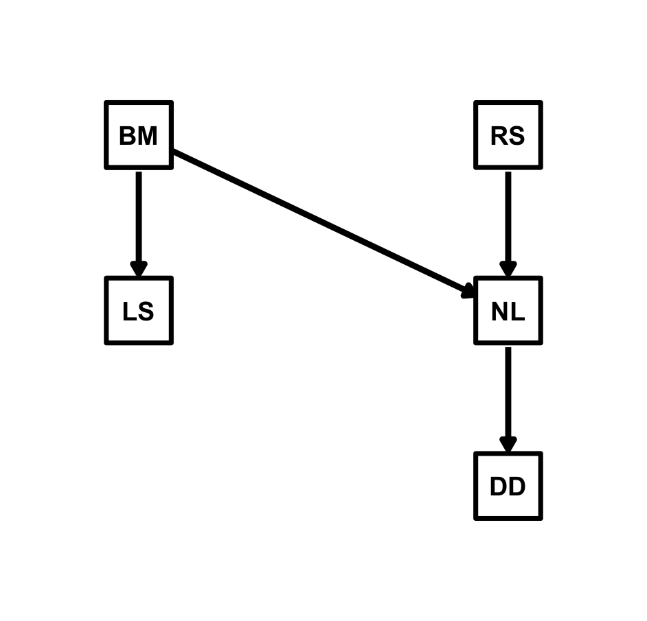

Phylogenetic Models
Achaz von Hardenberg
2025-12-23
Source:vignettes/03_phylogenetic_models.Rmd
03_phylogenetic_models.RmdBack to the Rhinograds: Phylogenetic Structural Equation Models
(PhyBaSE) with because
One of the core features of the because package is the
ability to fit Phylogenetic Bayesian Structural Equation models
(PhyBaSE) through the because.phybase module, allowing
researchers to account for shared evolutionary history among species
when analysing the causal relationships among traits.
Once again we will use the Rhinogradentia dataset and tree previously analysed in Gonzalez-Voyer and von Hardenberg, (2014) and in von Hardenberg and Gonzalez-Voyer (2025). Let’s start by loading the necessary packages and data:
library(because.phybase) #the main `because` package will be loaded automatically
data(rhino.dat)
data(rhino.tree)While in previous implementations it was necessary to compute the
variance-covariance matrix from the tree and pass it to JAGS,
because handles this internally. You only need to provide
the phylogenetic tree (class phylo) via the
structure argument. Also, because
automatically matches the species names in the data and tree: you only
need to ensure that the species names in the data frame column specified
by species match the tip labels in the tree and provide the
name of the species column to the because() function
through the id_col argument. Also, you do not need to
rescale the total tree length to 1 (needed for a correct estimation of
Pagel’s lambda parameter), as because will handle this
internally.
So, let’s specify the structural equations of the best model (sem8) as fitted by von Hardenberg and Gonzalez-Voyer (2025):

Now we can fit the model with because() including the
phylogenetic tree with the structure argument. Also, as
this is a more complex model than in the previous examples, to speed up
the model fitting we will run 3 chains in parallel using the
parallel = TRUE and n.cores = 3 arguments.
Also we will request the WAIC information criterion to be computed by
setting WAIC = TRUE:
fit_sem8 <- because(
equations = sem8_eq,
data = rhino.dat,
structure = rhino.tree,
id_col = "SP",
WAIC = TRUE,
parallel = TRUE,
n.cores = 3
)
summary(fit_sem8)
# Mean SD Naive SE Time-series SE 2.5% 50% 97.5%
# alphaDD 0.581 0.276 0.005 0.007 0.036 0.582 1.146
# alphaLS 0.344 0.416 0.008 0.016 -0.490 0.346 1.138
# alphaNL -0.055 0.339 0.006 0.015 -0.731 -0.054 0.601
# beta_DD_NL 0.536 0.074 0.001 0.001 0.390 0.538 0.682
# beta_LS_BM 0.472 0.085 0.002 0.002 0.309 0.470 0.641
# beta_NL_BM 0.470 0.068 0.001 0.001 0.336 0.471 0.604
# beta_NL_RS 0.597 0.068 0.001 0.001 0.461 0.596 0.728
# lambdaDD 0.462 0.130 0.002 0.003 0.218 0.462 0.717
# lambdaLS 0.696 0.107 0.002 0.003 0.459 0.709 0.862
# lambdaNL 0.719 0.086 0.002 0.002 0.533 0.727 0.863
# sigma_DD_phylo 0.803 0.174 0.003 0.003 0.503 0.790 1.178
# sigma_DD_res 0.856 0.088 0.002 0.002 0.694 0.852 1.041
# sigma_LS_phylo 1.253 0.204 0.004 0.005 0.865 1.246 1.675
# sigma_LS_res 0.804 0.104 0.002 0.002 0.615 0.802 1.013
# sigma_NL_phylo 1.026 0.145 0.003 0.004 0.766 1.013 1.338
# sigma_NL_res 0.626 0.075 0.001 0.002 0.490 0.622 0.783
# Rhat n.eff
# alphaDD 1.000 1408
# alphaLS 1.003 639
# alphaNL 1.000 553
# beta_DD_NL 1.000 3088
# beta_LS_BM 1.001 2178
# beta_NL_BM 1.000 2255
# beta_NL_RS 1.001 2801
# lambdaDD 1.002 2136
# lambdaLS 1.000 1595
# lambdaNL 1.001 1788
# sigma_DD_phylo 1.002 2741
# sigma_DD_res 1.000 2712
# sigma_LS_phylo 1.000 1612
# sigma_LS_res 1.001 2103
# sigma_NL_phylo 1.001 1600
# sigma_NL_res 1.001 2427
#
# DIC:
# Mean deviance: 670
# penalty 133.7
# Penalized deviance: 803.6
#
# WAIC:
# WAIC with Standard Errors
# -------------------------
# N = 300 observations, 3000 MCMC samples
#
# Estimate SE
# elpd_waic -395.1 9.9
# p_waic 93.7 5.1
# waic 790.2 19.8The output shows that the posterior parameters are consistent with those we obtained coding the model directly in JAGS (von Hardenberg and Gonzalez-Voyer, 2025; the code is available in the supplementary materials of the paper).
The random effects formulation of because
If you are familiar with the output obtained from that model, you may
however have noticed that besides Pagel’s
parameters for each response variable, with because() we
also get estimates of the standard deviations of the phylogenetic and
residual components (sigma_[RESP]_phylo and
sigma_[RESP]_res, respectively). These are estimated
because because uses an optimised random effect formulation
to improve MCMC and significantly reduce runtime. While standard
phylogenetic models must invert the covariance matrix at every iteration
(as
changes), the random effect approach is mathematically equivalent but
computationally more efficent. because decomposes the
response into three additive components:
where:
- is the fixed effect (structural equation mean)
- is the phylogenetic random effect:
- is the residual error:
This allows us to pre-compute the inverse phylogenetic variance-covariance matrix () only once and pass it to JAGS as fixed data. JAGS simply scales this fixed precision matrix by 1/, avoiding costly repeated inversions.
Consequently, is derived from the posterior variance components as:
This is the approach also used in other packages such as
MCMCglmm (Hadfield, 2010) and brms (Bürkner,
2017).
Improved WAIC calculation
In because we improved the WAIC calculation, compared to
how we calculated it in von Hardenberg & Gonzalez-Voyer, (2025). The
WAIC is now computed directly from the pointwise log-likelihoods
monitored during model fitting, rather than approximating it from the
deviance as done previously. This approach, besides providing more
accurate estimates of the WAIC than the deviance-based approximation
provided by JAGS, also allows us to compute the standard errors for WAIC
(following the method suggested by Vehtari et al. 2017) allowing for
more reliable model comparisons.
Testing conditional independencies with d-separation
Let’s now test the conditional independencies implied by the model (We will set WAIC = FALSE here to speed up the computation, as we do not need to compare models):
test_sem8_dsep <- because(
equations = sem8_eq,
data = rhino.dat,
structure = rhino.tree,
id_col = "SP",
dsep = TRUE,
WAIC = FALSE,
parallel = TRUE,
n.cores = 3
)
summary(test_sem8_dsep)
# d-separation Tests
# ==================
#
# Test: RS _||_ BM | {}
# Parameter Estimate LowerCI UpperCI Indep P Rhat n.eff
# beta_RS_BM -0.029 -0.238 0.177 Yes 0.78 1.002 2177
#
# Test: RS _||_ DD | {NL}
# Parameter Estimate LowerCI UpperCI Indep P Rhat n.eff
# beta_RS_DD -0.117 -0.33 0.107 Yes 0.301 1 2563
#
# Test: RS _||_ LS | {BM}
# Parameter Estimate LowerCI UpperCI Indep P Rhat n.eff
# beta_RS_LS -0.019 -0.248 0.22 Yes 0.873 1 2423
#
# Test: BM _||_ DD | {NL}
# Parameter Estimate LowerCI UpperCI Indep P Rhat n.eff
# beta_BM_DD 0.117 -0.111 0.342 Yes 0.322 1 1824
#
# Test: NL _||_ LS | {RS,BM}
# Parameter Estimate LowerCI UpperCI Indep P Rhat n.eff
# beta_NL_LS 0.013 -0.151 0.177 Yes 0.86 1 2134
#
# Test: DD _||_ LS | {NL,BM}
# Parameter Estimate LowerCI UpperCI Indep P Rhat n.eff
# beta_DD_LS -0.063 -0.245 0.114 Yes 0.495 1.002 2693
#
#
# Legend:
# Indep: 'Yes' = Conditionally Independent, 'No' = Dependent (based on 95% CI)
# P: Bayesian probability that the posterior distribution overlaps with zeroAs expected, all conditional independencies are supported, indicating that the the hypothesised causal structure is consistent with the data.
Accounting for measurement error in traits in PhyBaSE models
In von Hardenberg and Gonzalez-Voyer (2025), we showed how PhyBaSE
models can be specified to account for measurement error in the traits.
These models can also be fitted with because(). In the case
you have available repeated measures per species, it is sufficient to
provide the data frame with all measurements (i.e. multiple rows per
species) and specify the id_col argument to indicate the
species identifier column. because() will automatically
format the data to create a response matrix with species in rows and
replicates in columns, padding with NAs as necessary. We
will use the same data simulated in von Hardenberg and Gonzalez-Voyer
(2025) for this example. Each trait was transformed to a distribution
with mean equal to the original species trait value in
rhino.dat and SD equal to a proportion (25%) of the
among-species variance for that trait. Then 10 repeated measures were
sampled for each species. The resulting data frame
RhinoMulti.dat contains 1000 rows (10 replicates for each
of the 100 species) and 6 columns (species identifier and 5 traits).
Let’s load the data and fit the same model as before accounting for the
repeated measures:
library(because)
data(RhinoMulti.dat)
data(rhino.tree)
RhinoMulti.eq <-list(
LS ~ BM,
NL ~ BM + RS,
DD ~ NL
)
RhinoMulti.bc <- because(
equations = RhinoMulti.eq,
data = RhinoMulti.dat,
structure = rhino.tree,
id_col = "SP", # species identifier column
variability = "reps", # specify that data contains repeated measures
parallel = TRUE,
n.cores = 3
)
summary(RhinoMulti.bc)
# Mean SD Naive SE Time-series SE 2.5% 50%
# alphaDD 0.593 0.291 0.005 0.008 0.043 0.588
# alphaLS 0.381 0.394 0.007 0.016 -0.384 0.384
# alphaNL -0.084 0.321 0.006 0.012 -0.722 -0.085
# beta_DD_NL 0.539 0.079 0.001 0.001 0.383 0.539
# beta_LS_BM 0.446 0.084 0.002 0.002 0.287 0.445
# beta_NL_BM 0.466 0.068 0.001 0.001 0.333 0.465
# beta_NL_RS 0.592 0.069 0.001 0.001 0.463 0.592
# lambdaDD 0.484 0.134 0.002 0.003 0.221 0.485
# lambdaLS 0.698 0.106 0.002 0.003 0.453 0.708
# lambdaNL 0.696 0.091 0.002 0.002 0.503 0.705
# sigma_DD_phylo 0.826 0.178 0.003 0.004 0.516 0.813
# sigma_DD_res 0.842 0.094 0.002 0.002 0.668 0.839
# sigma_LS_phylo 1.249 0.206 0.004 0.005 0.869 1.234
# sigma_LS_res 0.796 0.105 0.002 0.002 0.607 0.790
# sigma_NL_phylo 0.997 0.146 0.003 0.004 0.739 0.986
# sigma_NL_res 0.644 0.079 0.001 0.002 0.501 0.641
#. 97.5% Rhat n.eff
# alphaDD 1.171 1.000 1295
# alphaLS 1.140 1.000 655
# alphaNL 0.545 1.001 744
# beta_DD_NL 0.693 1.000 2902
# beta_LS_BM 0.609 1.000 2205
# beta_NL_BM 0.602 1.001 2320
# beta_NL_RS 0.729 1.001 2916
# lambdaDD 0.735 1.000 1970
# lambdaLS 0.872 1.000 1448
# lambdaNL 0.853 1.000 1653
# sigma_DD_phylo 1.210 1.000 2057
# sigma_DD_res 1.039 1.000 2370
# sigma_LS_phylo 1.682 1.000 1445
# sigma_LS_res 1.021 1.000 1907
# sigma_NL_phylo 1.307 1.001 1503
# sigma_NL_res 0.816 1.000 2363In von Hardenberg and Gonzalez-Voyer (2025) we showed also how to
account for measurement error when only a single observation per species
is available, but the measurement standard error is known. This can also
be done with because() by providing for each trait a second
collumn called [TRAIT]_se containing the standard error of
the measurements for each species.
library(because)
data(RhinoMulti_se.dat)
data(rhino.tree)
RhinoMulti_se.bc <- because(
equations = RhinoMulti.eq,
data = RhinoMulti_se.dat,
structure = rhino.tree,
id_col = "SP",
variability = "se", # specify that data contains standard errors
parallel = TRUE,
n.cores = 3
)
summary(RhinoMulti_se.bc)
# Mean SD Naive SE Time-series SE 2.5% 50% 97.5% Rhat
# alphaDD 0.581 0.289 0.005 0.008 0.003 0.577 1.132 1.002
# alphaLS 0.372 0.412 0.008 0.016 -0.435 0.373 1.188 1.003
# alphaNL -0.117 0.352 0.006 0.015 -0.821 -0.125 0.587 1.002
# beta_DD_NL 0.541 0.077 0.001 0.001 0.392 0.541 0.691 1.000
# beta_LS_BM 0.442 0.086 0.002 0.002 0.275 0.441 0.612 1.000
# beta_NL_BM 0.466 0.069 0.001 0.002 0.331 0.465 0.603 1.000
# beta_NL_RS 0.591 0.069 0.001 0.002 0.450 0.591 0.721 1.000
# lambdaDD 0.492 0.135 0.002 0.003 0.238 0.494 0.751 1.001
# lambdaLS 0.700 0.105 0.002 0.003 0.463 0.713 0.866 1.006
# lambdaNL 0.701 0.090 0.002 0.002 0.505 0.709 0.854 1.000
# sigma_DD_phylo 0.833 0.181 0.003 0.004 0.515 0.823 1.224 1.000
# sigma_DD_res 0.832 0.091 0.002 0.002 0.663 0.828 1.017 1.000
# sigma_LS_phylo 1.252 0.201 0.004 0.005 0.872 1.240 1.666 1.010
# sigma_LS_res 0.796 0.106 0.002 0.002 0.602 0.790 1.020 1.002
# sigma_NL_phylo 1.005 0.148 0.003 0.004 0.743 0.996 1.326 1.000
# sigma_NL_res 0.642 0.078 0.001 0.002 0.500 0.640 0.808 1.000
# n.eff
# alphaDD 1237
# alphaLS 647
# alphaNL 579
# beta_DD_NL 2969
# beta_LS_BM 1712
# beta_NL_BM 2036
# beta_NL_RS 2055
# lambdaDD 2086
# lambdaLS 1571
# lambdaNL 1454
# sigma_DD_phylo 2147
# sigma_DD_res 2561
# sigma_LS_phylo 1553
# sigma_LS_res 2205
# sigma_NL_phylo 1501
# sigma_NL_res 2184Accounting for uncertainity in the phylogenetic tree
In cases where there is uncertainty about the phylogenetic
relationships among species, because allows users to fit
models across a sample of trees as described in von Hardenberg and
Gonzalez Voyer, 2025). With because this becomes trivial:
You just need to provide a list of phylogenetic trees (class
multiPhylo) to the structure argument instead
of a single tree; because will then randomly sample one
tree from the list at each MCMC iteration, effectively integrating over
phylogenetic uncertainty when estimating model parameters.
References
von Hardenberg, A. and Gonzalez-Voyer, A. (2025). PhyBaSE: A Bayesian approach to Phylogenetic Structural Equation Models. Methods in Ecology and Evolution. https://doi.org/10.1111/2041-210X.70044
Vehtari, A., Gelman, A., & Gabry, J. (2017). Practical Bayesian model evaluation using leave-one-out cross-validation and WAIC. Statistics and Computing, 27(5), 1413-1432.